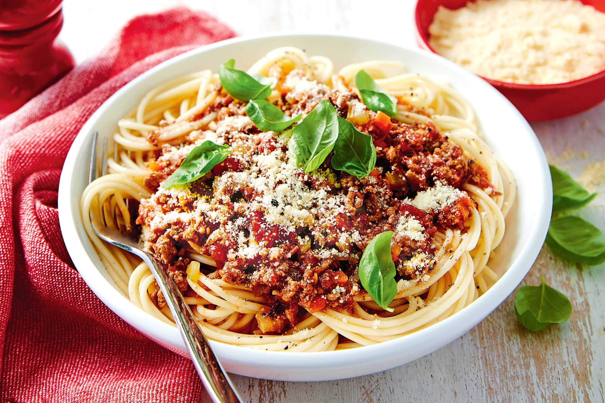

Spaghetti Bolognese

Description
This spaghetti bolognese recipe is a classic Italian dish with a rich and hearty meat sauce served over spaghetti. It’s perfect for family dinners and is sure to please everyone!
The combination of flavors from the beef, tomatoes, and herbs creates a delicious sauce that pairs perfectly with pasta.
Ingredients
- 1 pound ground beef
- 1 onion, chopped
- 2 cloves garlic, minced
- 1 carrot, diced
- 1 celery stalk, diced
- 1 can (14 oz) crushed tomatoes
- 2 tablespoons tomato paste
- 1 teaspoon dried oregano
- 1 teaspoon dried basil
- Salt and pepper to taste
- 8 ounces spaghetti
- Grated Parmesan cheese for serving
Steps
- In a large skillet, cook the ground beef over medium heat until browned. Drain excess fat.
- Add the onion, garlic, carrot, and celery to the skillet. Cook until the vegetables are soft.
- Stir in the crushed tomatoes, tomato paste, oregano, basil, salt, and pepper. Simmer for 20-30 minutes.
- Meanwhile, cook the spaghetti according to package instructions. Drain and set aside.
- Serve the bolognese sauce over the spaghetti and top with grated Parmesan cheese.
Home